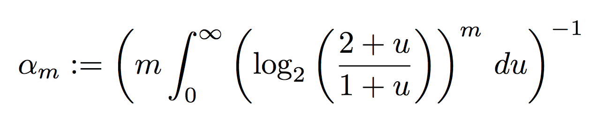

# What you won't find here --- # What you *will* find instead ### Applicable to *real problems* ### Implemented in less than *100 loc* ### *Usefulness* far outweiging complexity --- # What you *will* find instead ### Also they're *REALLY COOL* --- The goold old days when "correct" was most important class: center, middle # ALOT of data <img src="img/alot.png"> --- class: center, middle # Probabilistic algorithms --- # 2 classes ## Monte-Carlo Answer in constant time (i.e usually fast), but might not be correct. ## Las Vegas Answer correctly, without guarantees about how much it takes --- # 2 classes ## Monte-Carlo Answer in constant time (i.e usually fast), but might not be correct. ## .cut[Las Vegas] .cut[Answer correctly, without guarantees about how much it takes] --- <img style="width: 20em" src="chips.jpg"> --- # Correct algorithms Most have O(n) space complexity. When n is big, this is a lot of space. [img: HOUSTON WE HAVE A PROBLEM] --- # Data may be cheap*, processing it is not. .footnote[not really] --- # Streaming algorithms Big data is big Sometimes you simply can't store it - stream processing the only way - store only "sketches" of the data so far Even if you do store it, accessing it can be very expensive --- ## Problems at hand Given a stream of values *Cardinality*: How many distinct elements have we seen? *Membership*: Has this value ever appeared in our stream? *Frequency*: How often does this value appear in the stream? --- class: center, middle # Cardinality --- .chapter[Cardinality] *Problem*: given a list `n` values, how many of them are distinct? Examples: * How many unique users visited our app last month? * How many visited the /blackfriday page? * How many distinct browser fingerprints did we have? * How many links to facebook/youtube/twitter did our users share? * How many unique IPs tried to hack us in the last day? --- .chapter[Cardinality] ## Correct solutions: #### Bitmap #### Hash table #### Trees (of many types) All of these grow linearly with the size of the data. ## Probabilistic solutions: #### Linear counting #### HyperLogLog --- class: center, middle # HyperLogLog --- .chapter[HyperLogLog] Assume you're generating *uniformly distributed* random numbers. ### 2 numbers? Probably one is 0xxx, the other is 1xxx ### 4 numbers? 00xx, 01xx, 10xx, 11xx --- .chapter[HyperLogLog] ### A list of uniformly distributed 2<sup>10</sup> numbers? There's probably a number that starts with `0000 0000 00xx ...` --- .chapter[HyperLogLog] ### Going the other way Did we find the value `0000 0000 001x ...` in our stream? There are around 2<sup>10 numbers in there, give or take. --- class: center .chapter[HyperLogLog] ## Most common reaction <img src="jackie chan.jpg"> --- .chapter[HyperLogLog] ### Useful analogy: Imagine * flipping a coin 10 times * writing down the longest streak of heads: H T H H T H H H T T => 3 * repeat Someone tells you they did this a bunch of times and got: * longest streak of 2 heads ⇒ they probably did it only a few times * longest streak of 8 heads ⇒ wow they must have flipped that coin a lot --- .chapter[HyperLogLog] Without further ado, the LogLog<sup>*</sup> algorithm: - for each value: - apply a hash function (eg Murmur, SipHash, Tiger) - count the number of leading zeroes in the hash - remember the maximum number of leading zeroes from all values - <code>cardinality = 2<sup>max_zeroes</sup></code> Pick a hash function that uniformly distributes results! .footnote[Also called FM Sketch] --- class: center .chapter[HyperLogLog] ## I promise it works * .footnote[`s/MAGIC/MATH`] --- .chapter[HyperLogLog] ## Some minor issues: * The standard deviation is a few orders of magnitude. * It only returns powers of two * Outliers completely mess up the result * If for a given value our hash function returns 0, the algorithms believes there are 2<sup>65</sup> unique values. [LOGARITHMIC BAR CHART showing the average error for N runs] --- class: center, middle .chapter[HyperLogLog] ### How do we make it better? # Make it Hyper! --- .chapter[HyperLogLog] ## Run it multiple times - `m` buckets - assign each hash to a bucket - average results from all buckets to get the result - harmonic mean smoothes out outliers [FORMULA WITH THE SUM FROM ALL BUCKETS, what harmonic mean is] --- .chapter[HyperLogLog] ## How to pick the bucket? Round robin? Requires state, not ideal. Just use the first <code>log<sub>2</sub>(m)</code> bits of the hash to pick the bucket. * e.g for 1024 buckets use the first 10 bits [graph with pickign first 10 bits] --- .chapter[HyperLogLog] ## Much more consistent [GRAPH WITH THE RESUlTS so far] --- .chapter[HyperLogLog] ## Much more consistent ...but constantly overestimating: <pre> run 0: 1382608 run 1: 1363920 run 2: 1404200 run 3: 1411011 run 4: 1391365 run 5: 1387650 run 6: 1417728 run 7: 1366681 run 8: 1376531 run 9: 1432453 <pre> --- .chapter[HyperLogLog] ## More magic ...It's ok, just multiply with 0.7212. .footnote[`s/MAGIC/MATH`] --- .chapter[HyperLogLog] ## More magic ...It's ok, just multiply with 0.7212.  Some calculus required. .footnote[`s/MAGIC/MATH`] --- .chapter[HyperLogLog] ## Space complexity If values are numbers between `1` and `n` * storing one such value: <code>log<sub>2</sub>(n)</code> bits * storing the number of leading zeroes: <code>log<sub>2</sub>(log<sub>2</sub>(n))</code> bits* * multiplied by `m`, but `m` is constant In our case, `n` is determined by the hash function * usually <code>n = 2<sup>64</sup></code> [IMAGE NOT BAD] .footnote[This is where the "LogLog" part comes from] --- .chapter[HyperLogLog] ## Space complexity * 1K buckets: `1024 * 6bits = 768bytes` * 16K buckets: `16384 * 6bits = 12288bits = 12KB` Space required = <code>log<sub>2</sub>(log<sub>2</sub>(64)) = 6</code> bits 16K buckets => 16K * 6bit => 12KB space required --- .chapter[HyperLogLog] ## Space complexity Can be even better by having sparse buckets if the cardinality is low. * redis switches automatically between sparse and dense bucket implementations. --- .chapter[HyperLogLog] ## Other notes #### Tunable error rate by * tuning the number of buckets * picking a longer hash function #### Can combine multiple HLL instances * just add up the buckets * useful in distributed systems #### Implemented in Redis #### Some assembly required - choosing a weak hash function might make it exploitable to grossly over estimation - for small number of elements it's better to switch to something else, e.g linear counting --- # Membership --- .chapter[Membership] *Problem*: Given a large list of values, is X in that list? Examples: * When a user visits our page, is this his first visit? * When logging an exception, is this something new or did we encounter it before? * Is this ID in the database? Note: Database indexes solve this exact problem. --- .chapter[Membership] ## Correct solutions<sup>*</sup> #### Hash tables #### Trees * B-trees * balanced binary trees * radix trees * treaps As before: All of these grow linearly with the size of the data. ## Probabilistic solutions Bloom filter Quotinet filter .footnote[*basically whatever is used to implement database indexes] --- .chapter[Membership] # Bloom filter --- .chapter[Membership - Bloom filters] Drawbacks: --- .chapter[Membership - Bloom filters] ## Several variations Stable bloom filters - duplicate detection Scalable bloom filters - discard old data Continuous bloom filter --- .chapter[Membership] Quotient filter An approximate member query (AMQ) filter used to speed up answers in a key-value storage system. Key-value pairs are stored on a disk which has slow access times. AMQ filter decisions are much faster. However some unnecessary disk accesses are made when the filter reports a positive (in order to weed out the false positives). Overall answer speed is better with the AMQ filter than without it. Use of an AMQ filter for this purpose, however, does increase memory usage. --- # Frequency Problems: * How often does a given element appear in the list? * What elements appear most in the list? Examples: * A request comes in from IP address X. Is this IP hammering our API? * What are the top 10 IP addresses that hit us? What about the top 10 viewed articles? --- .chapter[Frequency] Correct solutions: #### Hash tables* Element as the key, number of appearences as the value. #### Trees* .footnote[*no surprise, by now] --- # Common caveats * Only approximate answer * Inflexible * Require walking over the entire dataset to rebuild * Good theoretical complexity, large constant due to hashing * *Most importantly*, only apply for lots and lots of data